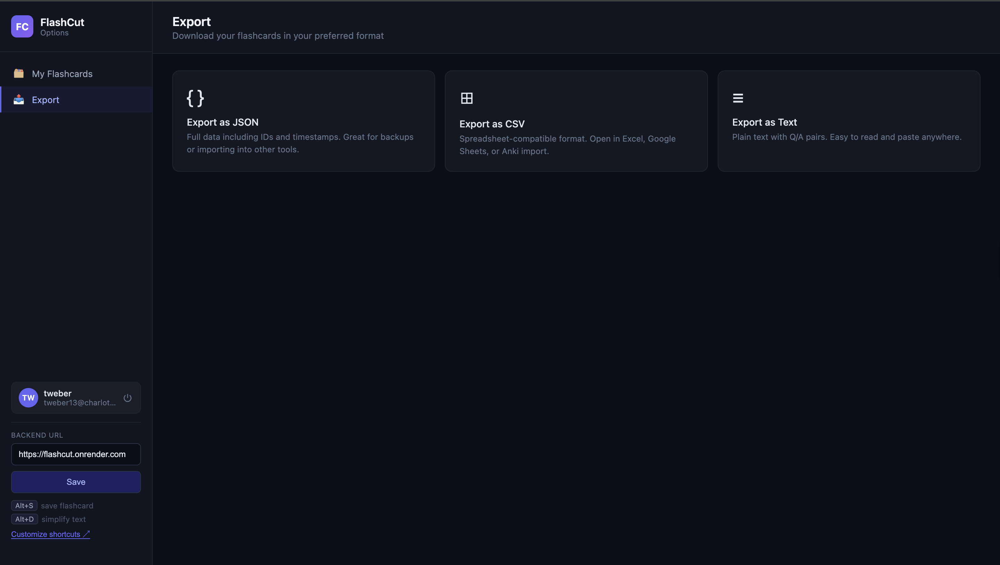

FlashCut
AI-powered flashcards built from what you actually read on the web. A Chrome extension backed by a Node API.
Overview
FlashCut helps learners capture vocabulary and ideas in context. Users highlight text on any page; the extension can save short selections as flashcards or use AI to simplify longer passages for quick understanding. Accounts, card storage, and model calls are handled through a dedicated backend so the extension stays focused on the reading experience.

Architecture
The codebase is split into a Chrome extension (extension/) and a Node server (server/).
The extension talks to a configurable API URL (default https://flashcut.onrender.com); developers can point to a local instance from the options page.
- Extension: popup UI, content scripts, keyboard shortcuts, options for backend URL.
- Server: REST API for authentication, flashcard generation, retrieval, and secure persistence.
Key features
- Alt+S: Save a highlighted word or short phrase (1 to 3 words) as a flashcard.
- Alt+G: Ask AI to simplify a longer selection (2+ words). The result is shown for reading help and is not automatically saved as a card.
- Accounts: Register and sign in through the extension. Cards are tied to the user.
- Management: View, edit, delete, and export cards (CSV/JSON) from the options UI.
- Shortcuts: Reassignable in
chrome://extensions/shortcuts(system pages excluded).
My role
Built as part of a 5-person software development team (April 2026).
- Developed a full-stack Chrome extension that converts highlighted web content into AI-generated flashcards.
- Implemented backend functionality using Node.js, Express, and PostgreSQL to validate requests, process AI-generated flashcards, and persist user data.
- Built REST API endpoints for authentication, flashcard generation, flashcard retrieval, and extension-to-backend communication.
- Supported a secure, maintainable architecture using JWT-protected routes, password hashing, environment variables, controllers, services, and database models.
Tech stack
JavaScript, Chrome extension APIs, Node.js, Express, PostgreSQL, JWT authentication, hosted API on Render.